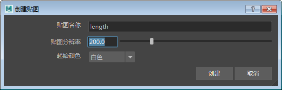

在 XGen 中为抽象图案设置动画
场景由 XGen“归档”立方体基本体构成。一个纹理贴图驱动“长度”(length)属性，一个表达式驱动“扭曲”(twist)属性。
XGen 是一种功能强大的工具，提供了许多创意机会来定位任意数量的随机或均匀放置的基本体。您可以结合使用纹理贴图和 XGen 描述来指定基本体生成的位置和密度，以及控制若干基本体属性。
本教程将介绍如何才能非常轻松地使用纹理贴图“驱动”XGen 基本体的长度。这些基本体可以是球体、样条线或如以下示例所示导出为归档的立方体几何体。然后，我们将使用 $frame 表达式为归档的长度设置动画。最后，我们将讨论如何使用 XGen 和 MtoA 来批渲染动画。
要观看介绍此过程的视频教程，请单击此处。
基本体归档
- 首先，创建要用作 XGen 归档的多边形立方体。将立方体的比例保留为 1,1,1。稍后，我们将使用 XGen 的“大小”(Size)属性进行调整。
- 选择立方体后，转到*“生成 > 将当前选择项导出为归档...”(Generate > Export Selection as Archive(s)...)*
- 将“归档文件名”(Archive Name)重命名为 cube，然后选择归档文件的保存位置。
XGen 描述
- 创建一个多边形平面。我们将使用此平面指定 XGen 描述。如果您想让 XGen 基本体形成圆形构造，请确保将“细分宽度”(Subdivisions Width)和“高度细分数”(Subdivisions Height)设置为 1。如果要形成方形构造，则将“细分宽度”(Subdivisions Width)和“高度细分数”(Subdivisions Height)增加至 10。在此示例中，我们将它们设置为 1。
- 选择该多边形平面，然后转到“生成 > 创建描述”(Generate > Create Description)。此操作将打开下面的“创建 XGen 描述”(Create XGen Description)。
- 选择“自定义几何体/ 归档文件”(Custom Geometry/Archives)。 保留其他默认设置不变，然后单击“创建”(Create)。
- 建议先降低“预览/输出”(Preview/Output)选项卡中的“百分比”(Percent)值，然后再继续操作。如果“百分比”(Percent)的值过高，您可能会发现计算机会因生成大量的基本体而停止运行。
扭曲表达式
- 在“基本体属性”(Primitive Attributes)下，单击“扭曲”(Twist)滑块控件右侧的向下箭头
 。
。
- 从菜单中选择以下项：
| 加载表达式 > 示例 > 几何体 > flatten_Room(Load Expression > samples > Geometry > flatten_Room) |
|---|
您应该会看到“宽度”(Width)和“深度”(Depth)属性出现在“扭曲”(Twist)下方。将“扭曲宽度”(Twist Width)增大到至少 200。
密度(Density)
根据表达式编辑器中使用的值，您可能需要更改“密度”(Density)值。如果立方体归档过于密集地聚在一起，您可以减小“密度”(Density)值。相反，如果立方体相距太远，则可能需要增大密度或减小最大宽度大小。下面的图像显示了增加“密度”(Density)对 XGen 创建的基本体数量的影响。
密度(Density)：35000.0
- 将“密度”(Density)值倍增至 70000.0 时呈现的效果如下图所示。
密度(Density)：70000.0
长度
我们可以结合使用纹理贴图和表达式来控制立方体的长度（高度）。首先，创建一个纹理贴图来控制它们的长度。
- 单击“长度”(Length)右侧的向下箭头 。选择“创建贴图...”(Create Map...)（请务必注意，仅当平面指定有 Maya 着色器时，该选项才有效）。
- “贴图名称”(Map Name)应为“length”。将“贴图分辨率”(Map Resolution)增加到 200 左右。这将按每个面的 Texel 数设置 PTEX 贴图的分辨率。使用高分辨率纹理时，请使用更大的“贴图分辨率”(Map Resolution)值。完成后，单击“创建”(Create)。

创建纹理贴图
现在，我们要添加纹理贴图。单击滑块控件右侧的绘制图标  。这时应该会在“Hypershade”和“节点编辑器”(Node Editor)窗口中看到文件纹理已连接到平面。
。这时应该会在“Hypershade”和“节点编辑器”(Node Editor)窗口中看到文件纹理已连接到平面。

- 选择该文件纹理，然后打开要用于驱动立方体基本体长度的纹理贴图。请确保选择的纹理贴图具有较高的对比度，即使尺寸较小也可识别其特征。如果图像中包含的意外细节过多，则将不会更好地传递到立方体。
使用黑白纹理驱动立方体归档的“长度”（贴图用于顶部页面图像）。
- 在渲染场景之前，我们必须先告知 XGen 更新文件纹理。为此，单击每个长度、宽度和深度属性的
 磁盘图标。创建一个灯光并渲染场景。
磁盘图标。创建一个灯光并渲染场景。
更新用于定义基本体属性的文件纹理后，记得选择 磁盘图标。否则，XGen 将不会更新它，渲染将不会发生变化。
长度表达式
- 接下来，单击“长度”(Length)滑块控件右侧的表达式图标 。
- 在“表达式编辑器”(Expression Editor)中应该可以看到以下长度表达式文本。在表达式文本字段中，您应该会看到以下文本：
$a=map('${DESC}/paintmaps/length');#3dpaint,200.0 此文本用于使用纹理贴图定义长度属性，这里的 200 是我们之前定义的“贴图分辨率”(Map Resolution)。
- 在“表达式编辑器”(Expression Editor)中添加以下行。
$a=20*$a+1; ...其中，20 是立方体归档的最大长度，1 是最小大小。您的长度表达式编辑器应类似下图。复制表达式文本。完成后，单击“接受”(Accept)。
- 在此处粘贴用于长度的相同表达式。对“深度”(Depth)属性执行相同的操作。
动画
我们可以使用 $frame 表达式向 XGen 立方体归档的“长度”(Length)属性添加一些动画。
- 打开长度属性的“表达式编辑器”(Expression Editor)，然后在编辑器窗口中添加以下内容：
$a=map('${DESC}/paintmaps/length1');#3dpaint,200.0 $a=20*$a+$frame+1; $a - 您可能想要将 20 增加至较高的值（如 40），以增加“长度”(Length)属性的大小。单击“接受”(Accept)。您应该看到已创建名为“帧”(Frame)的滑块。
- 转到时间滑块上的第 1 帧。右键单击“帧”(Frame)，然后选择“设置关键帧”(Set Key)。您可能需要使用负值，以便立方体开始长度为零。
- 转到结束帧（如 100），然后为“帧”(Frame)创建另一个关键帧（如 25）。移动时间滑块，观看动画。在动画期间，您应该会看到立方体的长度似乎在不断增加。
- 此外，您也可以尝试对“扭曲宽度”(Twist Width)属性设置关键帧，以将立方体扭曲为有趣的构造。以下示例使用的值介于 200 到 600 之间。
批渲染
在进行批渲染前，记得执行以下步骤，否则 XGen 描述将不会渲染：
- 保存场景。
- 选择几何体和 XGen 描述之后，从 XGen 描述菜单中转到“文件 > 导出面片以进行批渲染” (File > Export Patches for Batch Render)。如果 XGen 描述包含动画，则启用该动画并选择“帧范围”(Frame Range)。确保在“插件管理器”(Plug-in Manager)中加载了 AbcExport.mll，否则将无法正确导出动画。
- 保存场景。
- 对动画效果满意后，就可以进行批渲染动画了。
总结
有关通过纹理贴图和表达式为 XGen 基本体归档构造设置动画的教程到此结束。这款工具具有很多强大的功能，这只是其中一个示例。可尝试使用不同的纹理贴图和基本体类型（如样条线和球体）。下面是使用连接至“长度”(Length)属性的各种纹理的更多示例。
感谢 Pedro Fernando Gómez 在 XGen 方面提供的帮助。